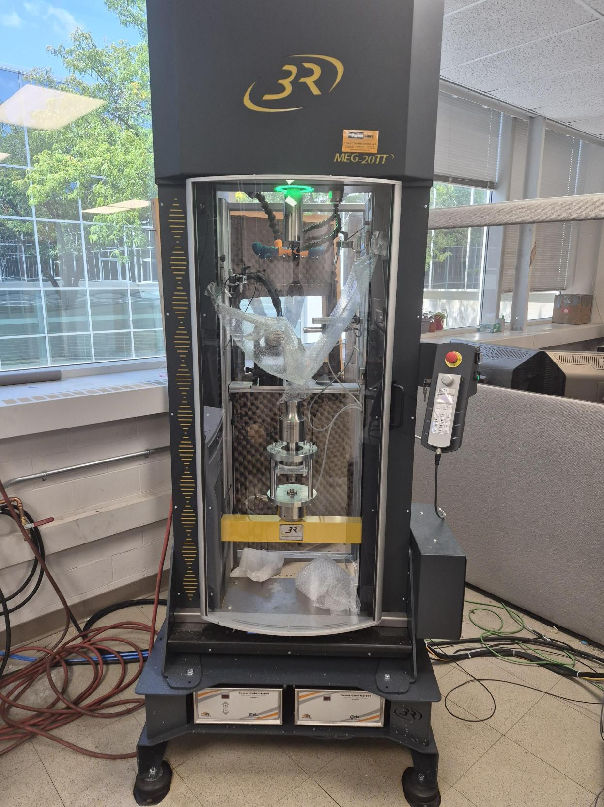

Experimental Facilities
F3L houses a suite of servo-hydraulic, rotary bending, and ultrasonic fatigue testing systems capable of accelerating fatigue-life quantification into the very-high and giga-cycle regimes, across ambient and extreme-temperature environments.

Ultrasonic Fatigue Testing (USF-2000A)
- Enables very high (giga) cycle fatigue testing
- Capable of reaching 1010 cycles in as little as six days

ARBM 120 Amsler Rotary Bending
- Outfitted with an AHTF 850-A high-temperature furnace
- Configurable for cycle counts up to 109
- Rotating bar bending fatigue testing at elevated temperatures up to 850°C

Hydraulic 100kN Axial Load Frame
- MTS closed-loop, servo-controlled hydraulic load frame
- Paired with an Instron digital servo-controller and an environmental chamber

Biaxial (Axial and Torsion) Load Frame
- Instron closed-loop, servo-controlled biaxial system
- 100 kN axial capacity paired with 1 kNm torsional capacity

MEG 20TT
- High-temperature ultrasonic fatigue tester
- 20 kN load capacity with a maximum test temperature of 1200°C
Typical Testing Capabilities
Our equipment supports a broad range of mechanical characterization methods, including:
- Tensile testing
- Strain-controlled fatigue testing (ε-N)
- Load-controlled fatigue testing (S-N)
- Fatigue crack growth testing (da/dN–ΔK)
- Fracture toughness testing (K1c, J1c, R-curve)
- Component fatigue testing
- Spectrum cyclic loading
- Creep testing
- Hot and cold temperature testing
- Fractomat crack-detection system
- Scanning Electron Microscope (SEM)
- Custom software and data-acquisition capabilities